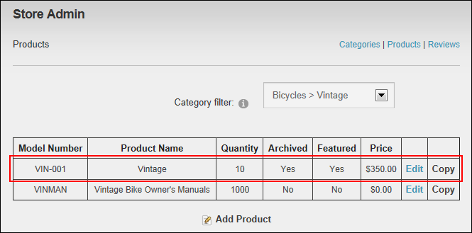

Managing Product Archiving
Catalog Managers can archive a store product or remove it from the archive using the Store Admin module. Archived products are not displayed in the Store Catalog module.
Tip: You can archive a product rather than delete it if you may want to restore at a later time. See "Managing Product Archiving"
- On the Store Admin module, click the Products link.
- At Category, select the category of the required product.
- Click the Edit link beside the product.

- At Archived, select from these options
- Mark
 the check box to archive the product. This removes the product from the store and lists it as archived in the Product summary list of the Store Admin module.
the check box to archive the product. This removes the product from the store and lists it as archived in the Product summary list of the Store Admin module. - Unmark
 the check box to remove archiving. This displays the product in the Store Catalog module.
the check box to remove archiving. This displays the product in the Store Catalog module.
-
Click the Update button. The product is now marked as archived.

The Archived Product